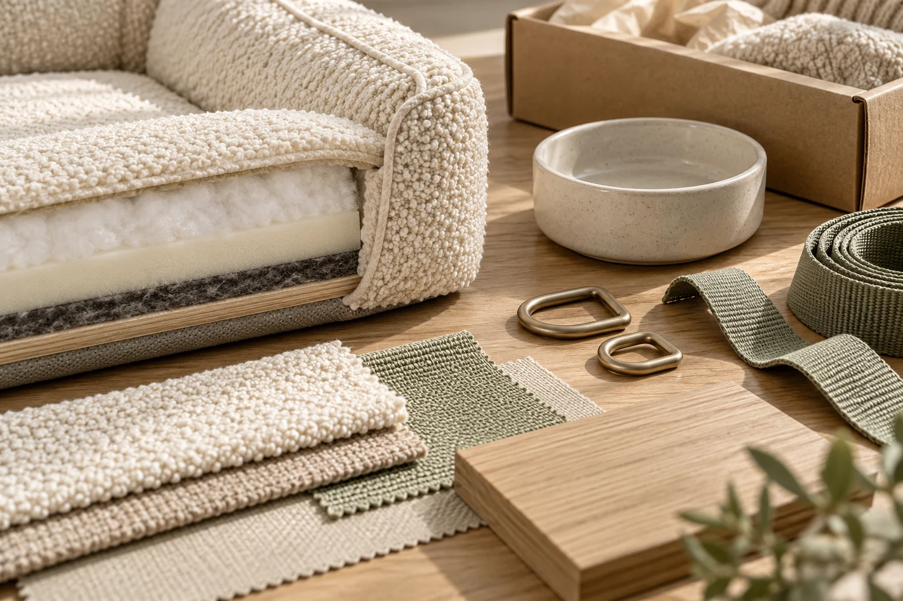

Local Presence in China
Shenzhen-based coordination and direct communication with manufacturers.
ABOUT KOVA / SHENZHEN, CHINA
Independent B2B sourcing and supplier coordination for international pet brands, importers and retailers.

WHO WE ARE
KOVA Sourcing is an independent sourcing service based in Shenzhen, China, helping international pet brands, importers and retailers explore Chinese manufacturers and coordinate product development and production.
Cat and dog products have equal importance: bedding, toys, feeding accessories, grooming products, travel essentials and walking accessories.
With a focus on the needs of small and medium-sized businesses in Europe and North America, KOVA connects product requirements with practical supplier discussions.
A sourcing and coordination partner, not a product manufacturer or online pet shop.
Explore Sourcing ServicesOUR BACKGROUND
KOVA’s approach draws on approximately eight years of experience in international business and Chinese manufacturing coordination, primarily in industrial equipment and production-line projects.
That manufacturing background informs the approach to supplier communication and project follow-up. Building on this manufacturing background, KOVA brings a practical, detail-oriented approach to sourcing cat and dog products for international brands.
APPROXIMATELY 8 YEARS OF RELEVANT EXPERIENCE
Clarifying requirements and comparing quotations.
Following up on production and coordinating visits.
Communicating issues and following up on responses.
Coordinating order information and shipment arrangements.
WHY KOVA
Practical support that keeps the product brief and supplier conversations connected.
Shenzhen-based coordination and direct communication with manufacturers.
Helping clarify specifications, quotations, timelines and outstanding questions.
Supporting sample discussions, production updates and issue follow-up.
Support tailored to individual sourcing stages or broader order coordination requirements.
OUR APPROACH
KOVA starts with the product requirements, then explores suitable supplier options and compares practical information to support informed decisions.
Clear questions, transparent updates and consistent communication help keep the agreed project stages moving. Scope, responsibilities and next steps are discussed before work begins.
See How We WorkSTART WITH YOUR PRODUCT REQUIREMENTS
Share your product requirements, target quantities and customization ideas. Let's discuss how KOVA can support your sourcing project in China.
Start a Sourcing Inquiry